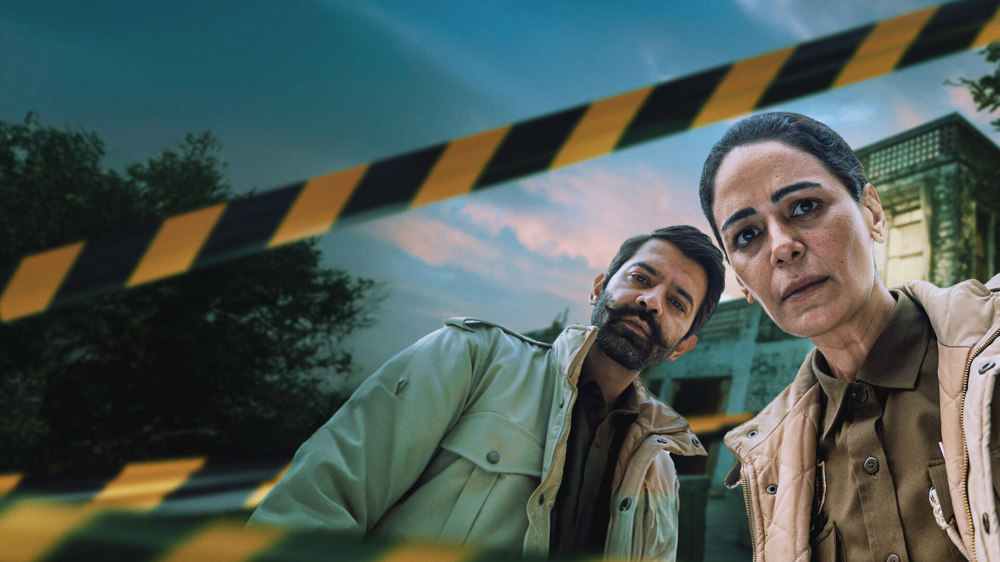

"The truth is often hidden in the fog."
Set in the heart of Punjab, Kohrra begins with the discovery of a dead NRI bridegroom in a field just days before his wedding. As two police officers, Balbir Singh and Amarpal Garundi, investigate the murder, they unravel a web of deceit, broken relationships, and dark family secrets. The series masterfully blends a gritty police procedural with a deep exploration of human emotions and societal pressures.